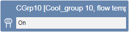
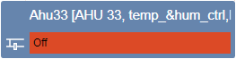
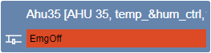
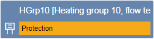
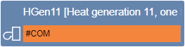
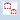

Creating Plant Overview Page
Creating overview pages provides the customer a quick overview of the plant. The state is displayed with the help of symbols, text, and background colors. Create overview pages as per project requirements. We recommended doing this by electrical and mechanical installation or geographic plant location.
State Display for Plant Items | |
On |  |
Off |  |
Emergency shutdown |  |
Protection mode |  |
Communication error |  |
- Click New Graphics.
- In the System Browser, select Logical View.
- Select Logical > [Network name] \...\ [Plant] >
- [Ahu_xx (air handling unit)]
- [HGen_xx (heat generation)]
- [HGrp_xx (Heat group)]
- [CGrp_xx (Cooling group)]
- [CGen_xx (chilled water generation)]
- Drag the object to the graphics page.
- Repeat Steps 1 through 4 for all plant items.
- Click Save.
Creating a Link on the Graphics Page
- The graphics pages are created.
- The overview page or another source page opens.
- In System Browser, select Application View.
- On the graphics page for navigation, select Applications > Graphics [Graphics page].
- Drag the object to the graphics page.
- The link object is configured.
NOTE: The length of the displayed text depends on the setting in System Browser:
‒ Description
‒ Description and name
‒ Name
‒ Name and description - Click Save .

NOTE:
Two functions are supported in Online mode:
- Single-click displays the page Properties in the Extended operation tab.
‒ Double-click opens the linked graphics page.
Creating a Viewport
- The Overview page is completed and open.
- In the Viewports group, click Create Viewports

. - Click Manual Viewport .
- Create a viewport that is the same size as the graphics page.
- Click Save .
- The viewport is saved below the corresponding graphics page and is displayed in System Browser.
- Select the Viewport page in System Browser.
- The Viewport properties dialog box opens.
- In the System Browser, select Logical View.
- Select Logical >
- Hierarchy object from [plant 1]
- Hierarchy object from [plant 2]
- and all other hierarchy objects belonging to this Overview page
and in Properties > Advanced, drag-and-drop the applicable node to the Link References text field. - Close the Viewport Properties dialog box.
- The plant 1 through n nodes are linked to the viewport. The Overview page opens if the user selects one of these nodes.
NOTE:
When changing the Overview page, the Overview viewport must be re-saved.